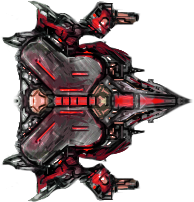
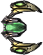
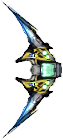
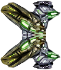

Return to front page
List of Ships
The following ships are currently in the game. There are more, but
until I learn Javascript, this is all you get!
-
The Hammerhead: A powerful capital ship that can launch a wave of laser blasts!

- Tactical Class: Sub Capital
- Ship Specification: Fortress
-
The Pincer: A fast interceptor that can dash at incredible speeds, knocking away ships!

-
Tactical Class: Interceptor
-
Ship Specification: Cutter
-
The Phantom: A interceptor that can launch an electric spike target to track it!

- Tactical Class: Recon
- Ship Specification: Ghost
-
The Carapace: A fighter that shreds shields!

- Tactical Class: Manifester
- Ship Specification: Electronic Combat Platform